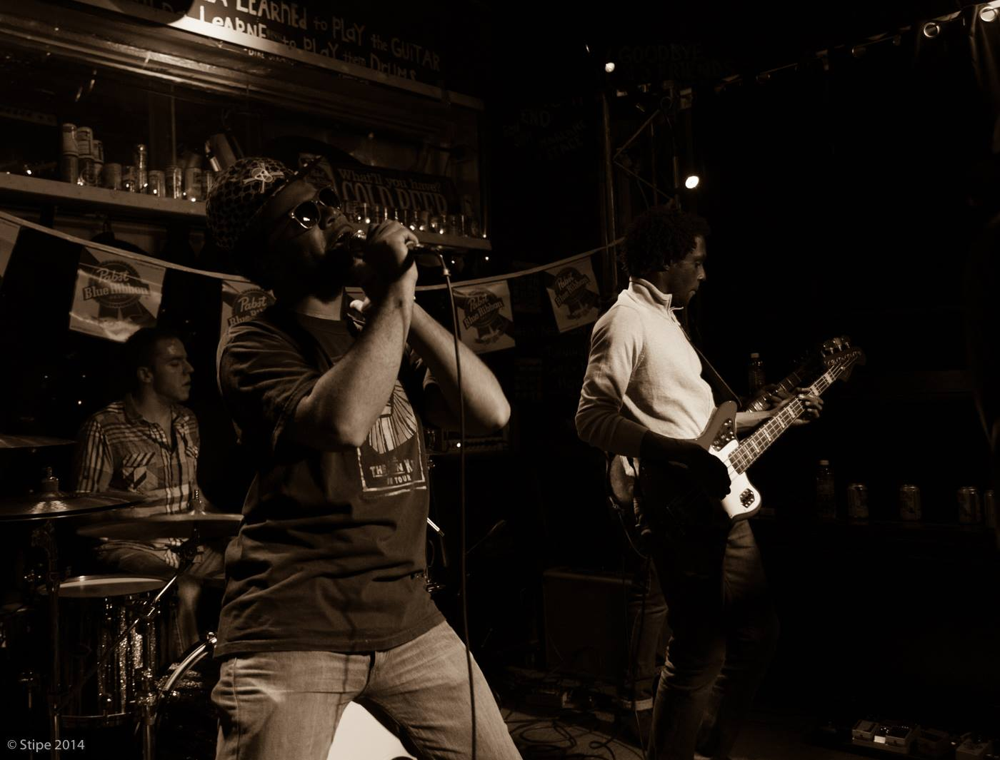

BoxBomb
This project gave me the foundational skills that transformed into a 10-year career. We released three albums and were signed to Tragic Hero Records, a sub-label of Warner Bros. Records.
Notable Performances:
Thrice, Toadies, The Get Up Kids, American Aquarium, Killa Priest, He is Legend, MuteMath, Will Hoge, Copeland, Underoath, Colossus, House of Fools, Hobex, The Enemy Lovers, Telescreen, Bayside, Veara


Toon & The Real Laww
This was a hip-hop duo that formed a short-term backing band. We performed at various venues and events in the Triangle area, mixing conscious rap with boom-bap beats.
Notable Performances:
Run the Jewels, 2 Live Crew, Meek Mill, Machine Gun Kelly, GZA, Gym Class Heroes, Big Sean, Mike Posner, Rapsody, King Mez, Kooley High

